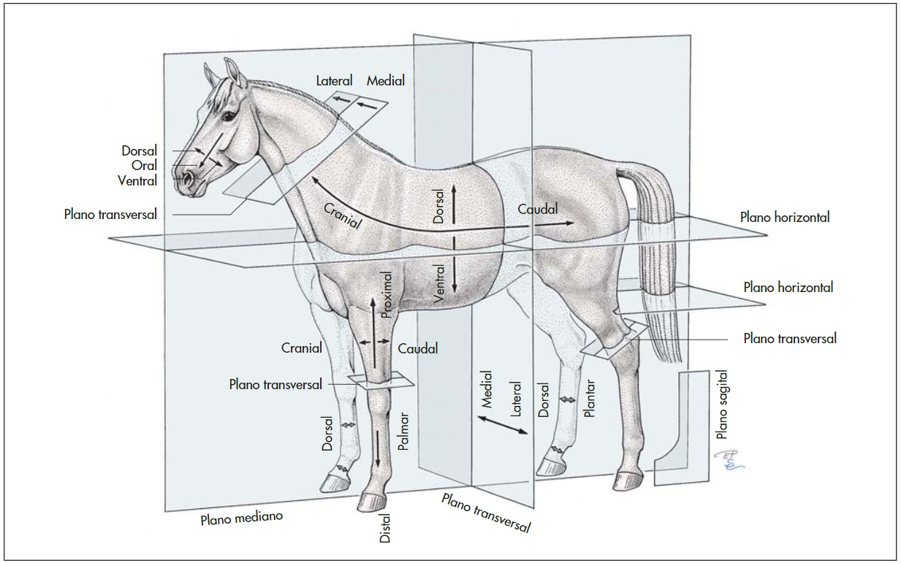

-
Dorsal ou Dorsalemente: parte de cima, as
costas, onde se localizam as vértebras.
-
Ventral ou Ventralmente: parte de
baixo, a "barriga", onde se localiza o
O. Esterno.
-
Caudal ou Caudalmente: o mais próximo da
cauda, mais perto dos membros posteriores,
ou seja, as pernas, atrás.
-
Medial ou Medialmente: tem uma linha
que divide o nosso corpo e o dos
animais ao meio, em duas partes iguais,
quando se fala de Medial, se refere ao
mais próximo desse meio.
-
Lateral ou Lateralmente: é o contrário da
linha Medial, é o lado de fora.
-
Plantar: é a parte de baixo do membro
Pélvico, como a planta do nosso pé.

-
Palmar: é a parte de baixo do membro
Torácico, como a palma da nossa mão.
-
Rostral ou Rostralmente: é o mais
próximo do nariz.
-
Proximal: quer dizer que está mais
próximo do tronco, coluna vertebral ou
da linha mediana dos animais.
-
Distal: é o contrário de próximal, é o
que tá mais longe. Por exemplo: seu pé
é distal e seu cotovelo é proximal.
-
Cranial ou Cranialmente: parte da frente, mais
próxima ao Crânio (rosto) do animal.
-
O.: Osso.
-
Oo.: Ossos.
-
M.: Músculo.
-
Mm.: Músculos.